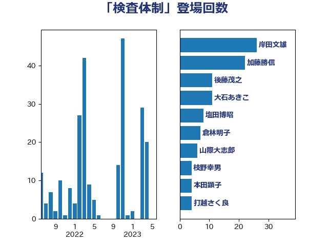

単語「検査体制」

| 岸田文雄 | 自由民主党 | 26 回 |
| 加藤勝信 | 自由民主党 | 22 回 |
| 後藤茂之 | 自由民主党 | 11 回 |
| 大石あきこ | れいわ新選組 | 11 回 |
| 塩田博昭 | 公明党 | 8 回 |
| 倉林明子 | 日本共産党 | 7 回 |
| 山際大志郎 | 自由民主党 | 6 回 |
| 枝野幸男 | 立憲民主党 | 4 回 |
| 本田顕子 | 自由民主党 | 4 回 |
| 打越さく良 | 立憲民主党 | 4 回 |
| 山本香苗 | 公明党 | 4 回 |
| 山口那津男 | 公明党 | 4 回 |
| 稲富修二 | 立憲民主党 | 3 回 |
| 小池晃 | 日本共産党 | 3 回 |
| 城井崇 | 立憲民主党 | 3 回 |
| 青木愛 | 立憲民主党 | 2 回 |
| 長谷川淳二 | 自由民主党 | 2 回 |
| 西村智奈美 | 立憲民主党 | 2 回 |
| 若松謙維 | 公明党 | 2 回 |
| 池下卓 | 日本維新の会 | 2 回 |
| 柚木道義 | 立憲民主党 | 2 回 |
| 山井和則 | 立憲民主党 | 2 回 |
| 小西洋之 | 立憲民主党 | 2 回 |
| 堀井巌 | 自由民主党 | 2 回 |
| 國場幸之助 | 自由民主党 | 2 回 |
| 吉良よし子 | 日本共産党 | 2 回 |
| 仁木博文 | 無所属 | 2 回 |
| こやり隆史 | 自由民主党 | 2 回 |
| 高階恵美子 | 自由民主党 | 1 回 |
| 阿部知子 | 立憲民主党 | 1 回 |
| 野村哲郎 | 自由民主党 | 1 回 |
| 赤羽一嘉 | 公明党 | 1 回 |
| 西村康稔 | 自由民主党 | 1 回 |
| 芳賀道也 | 国民民主党 | 1 回 |
| 磯崎仁彦 | 自由民主党 | 1 回 |
| 石橋通宏 | 立憲民主党 | 1 回 |
| 石垣のりこ | 立憲民主党 | 1 回 |
| 石井章 | 日本維新の会 | 1 回 |
| 石井啓一 | 公明党 | 1 回 |
| 田野瀬太道 | 無所属 | 1 回 |
| 田中健 | 国民民主党 | 1 回 |
| 片山大介 | 日本維新の会 | 1 回 |
| 源馬謙太郎 | 立憲民主党 | 1 回 |
| 渡辺周 | 立憲民主党 | 1 回 |
| 浜地雅一 | 公明党 | 1 回 |
| 浅野哲 | 国民民主党 | 1 回 |
| 河西宏一 | 公明党 | 1 回 |
| 池畑浩太朗 | 日本維新の会 | 1 回 |
| 永岡桂子 | 自由民主党 | 1 回 |
| 橋本岳 | 自由民主党 | 1 回 |
| 横沢高徳 | 立憲民主党 | 1 回 |
| 森田俊和 | 立憲民主党 | 1 回 |
| 東徹 | 日本維新の会 | 1 回 |
| 本田太郎 | 自由民主党 | 1 回 |
| 徳永エリ | 立憲民主党 | 1 回 |
| 山田宏 | 自由民主党 | 1 回 |
| 宮本徹 | 日本共産党 | 1 回 |
| 大串博志 | 立憲民主党 | 1 回 |
| 塩川鉄也 | 日本共産党 | 1 回 |
| 塩崎彰久 | 自由民主党 | 1 回 |
| 吉田統彦 | 立憲民主党 | 1 回 |
| 古川禎久 | 自由民主党 | 1 回 |
| 古屋範子 | 公明党 | 1 回 |
| 伊東良孝 | 自由民主党 | 1 回 |
| 伊佐進一 | 公明党 | 1 回 |
| 今枝宗一郎 | 自由民主党 | 1 回 |
| 中谷一馬 | 立憲民主党 | 1 回 |
| 上田清司 | 国民民主党 | 1 回 |
| 三浦信祐 | 公明党 | 1 回 |